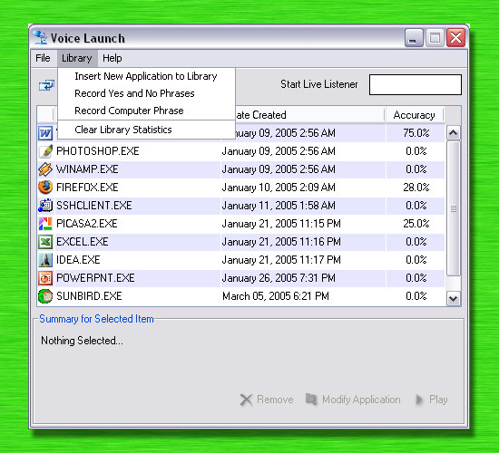
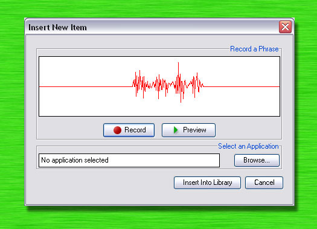

Inserting New Items to the Library
There are two methods to add new items to the library. Choose “Insert New Application to Library” in the Library menu as shown in Figure 7 or click the first icon from the left on the toolbar.
|  |
Figure 7 - Library Menu |
After performing either of these methods, a similar window as shown in Figure 8 is displayed. In this window, the user is required to first record a two-second phrase. This phrase file will later be associated with the application to be launched. To record the phrase, click Record and wait for the progress bar to be displayed. After the recording, the phrase can be previewed by clicking Preview.
|  |
Figure 8 - Insert new Item |
| Hint: For best performance, make sure there is no other sound before and after the sample. For example, Figure 8 displays a word which was recorded. Notice how on both sides of the sample are completely straight lines. |
After the recording is complete, click “Browse…” to select an application which should be launched when this phrase is recognized. Finally, click “Insert into Library” to finish and insert the new item into the library.
| Note: For best results, quite backgrounds are ideal. Also try to remember the distance between the microphone and your mouth. This distance should be the same every time. It has been known for the results to be impacted greatly when the distance between the mouth and the microphone is different to the distance which was previously used to record the phrase. |
Next section provides steps to launch an application via voice.
|